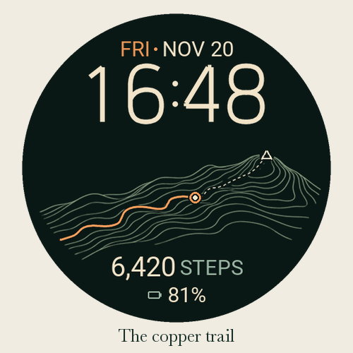

Topoğrafya
A Garmin watch face that traces a trail across a topographic map as you work toward your daily activity goal.
I’m an engineer. Here are some of the projects I’ve built and the prototypes I’m working on.

A Garmin watch face that traces a trail across a topographic map as you work toward your daily activity goal.
My second Garmin watch face, currently in development as a prototype.